כספת — מערכת אוטומטית להורדת דפי חשבון בנקאיים
OctoBankX מתחברת לבנקים שלך באמצעות SFTP, מורידה אוטומטית דפי חשבון יומיים עבור כל הבנקים המוגדרים, ומספקת מעקב מלא אחר כל ניסיון הורדה. כלול ממשק ווב לשולחן עבודה וממשק מותאם לנייד, עם תמיכה מלאה בעברית (RTL) ובאנגלית.
לוח הבקרה הוא דף הבית של OctoBankX. הוא מספק סקירה כללית של הפעילות האחרונה, מדדים עיקריים ובריאות המערכת.
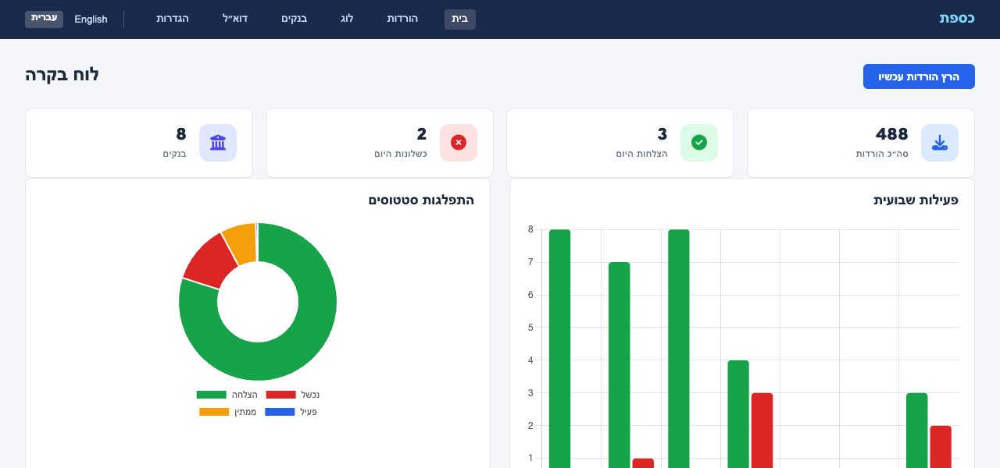
בראש לוח הבקרה, כרטיסי סיכום מציגים את המדדים העיקריים להיום:
| כרטיס | תיאור |
|---|---|
| סה״כ הורדות | סך כל רשומות ההורדה במערכת |
| הצלחות היום | כמה הורדות הושלמו בהצלחה היום |
| כשלונות היום | כמה הורדות נכשלו היום |
מתחת לתרשימים, טבלה מציגה את 10 ניסיונות ההורדה האחרונים בכל הבנקים:
| עמודה | תיאור |
|---|---|
| תאריך | תאריך דף החשבון |
| בנק | הבנק אליו שייכת ההורדה |
| סטטוס | הצלחה, נכשל, פעיל, או
ממתין |
| שגיאה | הודעת שגיאה אם ההורדה נכשלה |
| קובץ | נתיב לקובץ שהורד בהצלחה |
| התחלה | מתי החל העברת ה-SFTP |
| סיום | מתי הסתיימה ההעברה |
תגי הסטטוס מקודדים בצבע: ירוק להצלחה, אדום לכישלון, כחול לפעיל, ואפור לממתין.
הכפתור הרץ הורדות עכשיו מפעיל משימת הורדה מיידית לכל הבנקים עבור היום, מבלי להמתין להרצה המתוזמנת.
דף הבנקים מנהל את פרטי חיבור ה-SFTP ותצורת פענוח הקבצים לכל בנק.
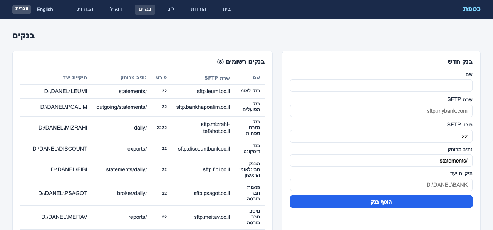
הפאנל הראשי מפרט את כל הבנקים המוגדרים ומציג:
| עמודה | תיאור |
|---|---|
| שם | שם הבנק לתצוגה |
| שרת SFTP | שם המארח של שרת ה-SFTP של הבנק |
| פורט | פורט SFTP (בדרך כלל 22) |
| נתיב מרוחק | התיקייה בשרת ה-SFTP שבה מופקדים דפי החשבון |
| רולר | כללי מיפוי עמודות לפענוח קבצי דפי חשבון |
| מפענח | כיתת המפענח המוקצית לעיבוד קבצי בנק זה |
| תיקיית יעד | תיקייה מקומית שבה נשמרים הקבצים שהורדו |
מלא את טופס בנק חדש:
בנק לאומי)sftp.leumi.co.il)22; שנה אם הבנק
משתמש בפורט לא סטנדרטי/statements)לחץ על הוסף בנק לשמירה. הבנק החדש יופיע מיד ברשימת הבנקים הרשומים.
דף ההורדות מציג כל משימת הורדה שבוצעה או נמצאת בתור, עם אפשרויות סינון.
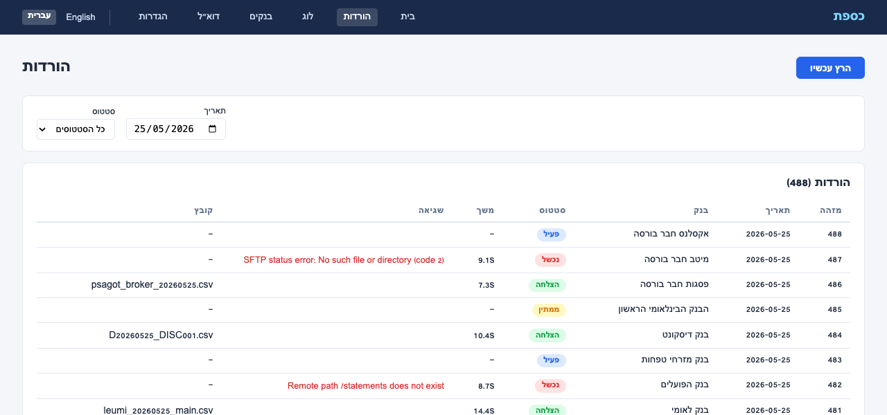
בראש הדף ניתן לסנן את רשימת המשימות לפי:
לחץ על סנן להחלה.
כל שורה מייצגת ניסיון הורדה יחיד עבור בנק אחד בתאריך אחד:
| עמודה | תיאור |
|---|---|
| תאריך | תאריך דף החשבון |
| בנק | שם הבנק |
| סטטוס | תוצאת הניסיון |
| שגיאה | פרטי שגיאה אם המשימה נכשלה |
| קובץ | נתיב הקובץ שהורד בהצלחה |
| התחלה | מתי החל העברת ה-SFTP |
| סיום | מתי הסתיימה ההעברה |
השתמש בכפתור הרץ עכשיו כדי להפעיל הורדה מיידית לכל הבנקים עבור תאריך היום.
דף הלוג הוא היסטוריית ההורדות המלאה — מסלול ביקורת שלם של כל הורדת דף חשבון שנוסתה אי פעם.
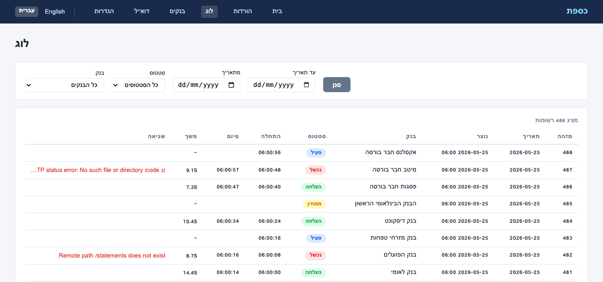
היומן תומך במספר מסננים שניתן לשלב:
לחץ על סנן להחלה.
כל רשומה מציגה את אותם שדות כמו בדף ההורדות. היומן מסודר מהחדש לישן
ושומר רשומות בהתאם להגדרת retention_days (ברירת מחדל: 90
יום).
טיפ: השתמש בדף הלוג לצרכי ביקורת ופתרון בעיות — דף ההורדות מתמקד בפעילות היום, בעוד שהלוג מכסה את ההיסטוריה המלאה.
דף ההגדרות שולט בהתנהגות המערכת הכללית של OctoBankX.
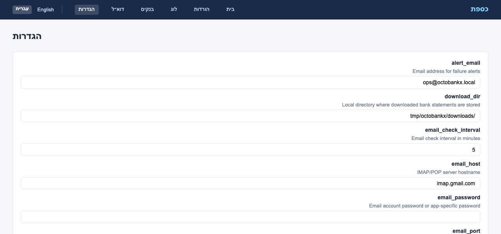
| הגדרה | תיאור | ברירת מחדל |
|---|---|---|
| alert_email | כתובת מייל שמקבלת התראות כישלון | ops@octobankx.local |
| download_dir | תיקייה מקומית שבה נשמרים דפי החשבון שהורדו | /tmp/octobankx/downloads |
| job_schedule | ביטוי cron למשימת ההורדה היומית האוטומטית | 0 6 * * * (6:00 בבוקר) |
| max_retries | מספר מקסימלי של ניסיונות חוזרים ל-SFTP לבנק ליום | 3 |
| notify_on_fail | שליחת מייל התראה כאשר הורדה נכשלת
(true/false) |
true |
| retention_days | מספר הימים לשמירת היסטוריית הורדות במסד הנתונים | 90 |
| sftp_timeout | זמן קצוב לחיבור SFTP בשניות | 30 |
לחץ על שמור הגדרות להחלת השינויים. שינויים
ב-job_schedule ייכנסו לתוקף בהרצה המתוזמנת הבאה.
שים לב:
download_dirחייב להיות ניתן לכתיבה על ידי תהליך האפליקציה. ודא שהתיקייה קיימת לפני השמירה.
חלק מהבנקים וחברי הבורסה שולחים קבצי דפי חשבון באמצעות דוא״ל במקום
SFTP. כספת כוללת מאזין דוא״ל מובנה שעוקב אחר תיבת דואר ייעודית (למשל
kassefet-server@gmail.com) באמצעות IMAP או POP3, ומוריד
אוטומטית קבצים מצורפים משולחים מאושרים.
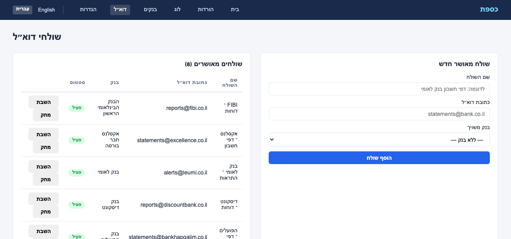
דף שולחי הדוא״ל מציג את כל כתובות הדוא״ל המאושרות בטבלה:
| עמודה | תיאור |
|---|---|
| שם השולח | תווית תיאורית (למשל “בנק לאומי – דפי חשבון”) |
| כתובת דוא״ל | כתובת הדוא״ל שהמערכת מקבלת ממנה קבצים |
| בנק | הבנק אליו משויך השולח — קבצים מצורפים מתויקים תחת בנק זה |
| סטטוס | פעיל (ירוק) או לא פעיל (אפור) |
רק מיילים משולחים מאושרים פעילים מעובדים. כל שאר המיילים מתעלמים.
מלא את טופס שולח מאושר חדש:
לחץ על הוסף שולח לשמירה.
הגדרות חיבור הדוא״ל מנוהלות בדף הגדרות:
| הגדרה | תיאור |
|---|---|
email_protocol |
imap או pop |
email_host |
שם מארח שרת הדואר (למשל imap.gmail.com) |
email_port |
פורט השרת (למשל 993 ל-IMAP SSL) |
email_username |
שם משתמש חשבון הדוא״ל |
email_password |
סיסמת חשבון דוא״ל או סיסמה ייעודית לאפליקציה |
email_ssl |
שימוש ב-SSL/TLS (true / false) |
email_check_interval |
תדירות בדיקת מיילים חדשים (בדקות) |
הצלחהOctoBankX כולל ממשק ווב נייד מותאם לחלוטין הנגיש בכתובת
/mobile/. כל הדפים זמינים דרך סרגל ניווט תחתון.
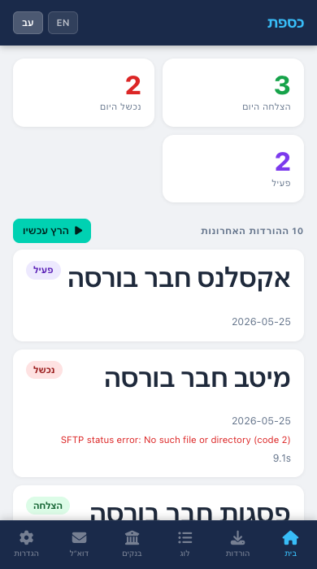
לוח הבקרה הנייד מציג מונים מסכמים בראש (הצלחות היום, כשלונות היום, פעיל) ולאחר מכן רשימה גלילה של הורדות אחרונות — כל אחת מוצגת ככרטיס עם שם הבנק ותג הסטטוס.
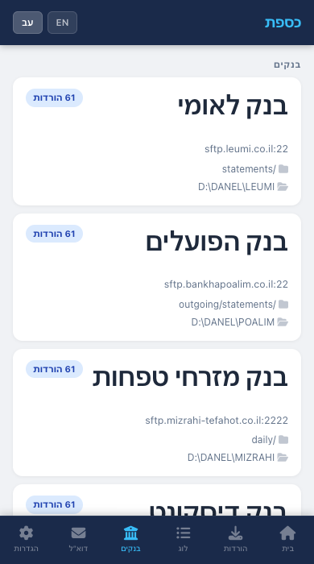
הבנקים מוצגים כקלפים, כל אחד מציג את מארח ה-SFTP, הפורט, הנתיב המרוחק, הרולר, המפענח ותיקיית היעד. הקש על בנק חדש בראש להרחבת טופס הרישום.
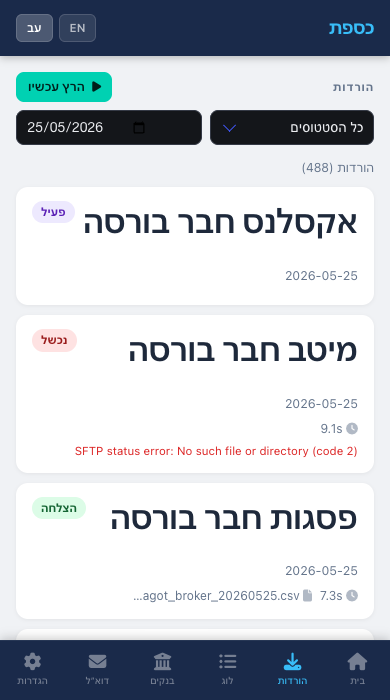
רשימת ההורדות מותאמת לנייד עם פריסת קלפים קומפקטית. מסנני תאריך וסטטוס מופיעים בראש. כל קלף מציג את הבנק, התאריך, הסטטוס וכל הודעת שגיאה.
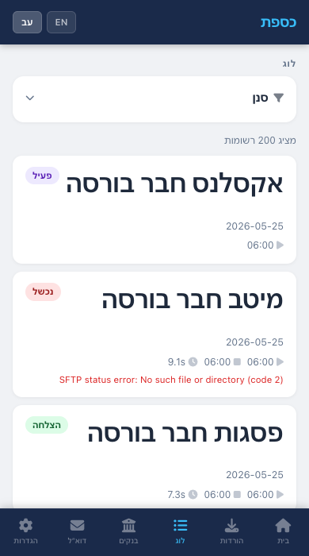
הלוג בנייד משתמש באותה פריסת קלפים כמו ההורדות. פקדי סינון (בנק, סטטוס, טווח תאריכים) נגישים בראש.
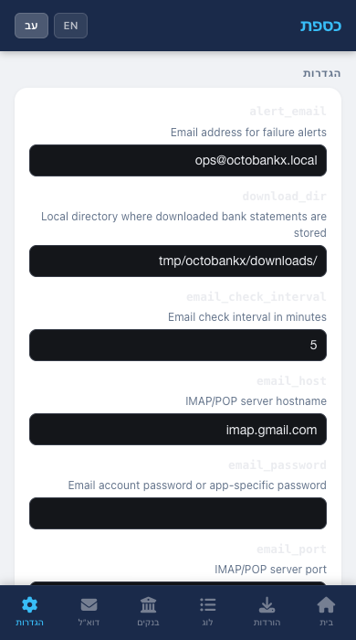
שדות ההגדרות מוצגים כטופס מותאם לנייד עם כל אפשרויות התצורה. קישור עבור לגרסת מחשב בתחתית מנווט לממשק שולחן העבודה המלא.
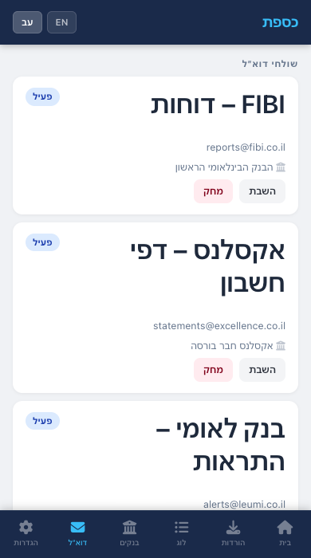
שולחי הדוא״ל מוצגים כקלפים, כל אחד מציג את שם השולח, כתובת הדוא״ל, הבנק המשויך ותג סטטוס. הקש על הכפתורים להפעלה/השבתה או מחיקה של שולח. טופס להוספת שולחים מאושרים חדשים זמין בתחתית.
OctoBankX תומכת באנגלית ובעברית. מתג השפה מופיע בסרגל הניווט בממשק השולחן עבודה ובממשק הנייד.
| הגדרה | סוג | תיאור |
|---|---|---|
alert_email |
מחרוזת (אימייל) | נמען לכל מיילי התראות המערכת |
download_dir |
מחרוזת (נתיב) | נתיב מוחלט לתיקיית דפי החשבון המקומית |
email_check_interval |
מספר שלם | דקות בין בדיקות תיבת דואר |
email_host |
מחרוזת | שם מארח שרת IMAP/POP3 |
email_password |
מחרוזת | סיסמת חשבון דוא״ל או סיסמה ייעודית לאפליקציה |
email_port |
מספר שלם | פורט שרת IMAP/POP3 |
email_protocol |
מחרוזת | imap או pop |
email_ssl |
בוליאני | שימוש ב-SSL/TLS לחיבור דוא״ל |
email_username |
מחרוזת (אימייל) | שם משתמש חשבון דוא״ל |
job_schedule |
מחרוזת (cron) | ביטוי cron סטנדרטי בן 5 שדות השולט בלוח הזמנים של ההורדה האוטומטית |
max_retries |
מספר שלם | כמה פעמים המערכת מנסה שוב חיבור SFTP שנכשל לפני שמסמנת את המשימה
כ-failed |
notify_on_fail |
בוליאני | כאשר true, נשלח מייל ל-alert_email עבור כל
הורדה שנכשלה |
retention_days |
מספר שלם | רשומות יומן ישנות יותר ממספר זה של ימים נמחקות אוטומטית |
sftp_timeout |
מספר שלם | שניות להמתנה לפני ביטול ניסיון חיבור SFTP |
OctoBankX © 2026